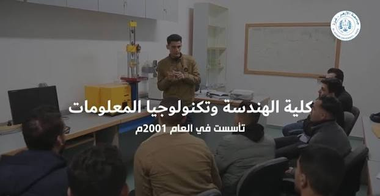
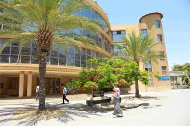

أنشئت كلية الهندســة وتكنولوجيا المعلومات بجامعة الأزهر بغزة في العام الجــامعي 2001/2002، لمواكبة التطور العلمي والتقدم الحضاري المتسارع الذي تشهده الساحات العلمية الأكاديمية خاصة، والمتطلبات المجتمعية الإنسانية عامة، ولتضع جامعة الأزهر بغزة في طليعة العمل الأكاديمي الفلسطيني الذي يخدم دون شك مسيرة العمل الوطني. تعتبر كلية الهندسة من الكليات الرائدة في الجامعة و تسعى الكلية لتكون في طليعة الكليات المتميزة تعليمياً وبحثياً في شتى مجالات الهندسة و تكنولوجيا المعلومات محلياً وإقليمياً ودولياً، وذلك بتوفير مستوى عال من التعليم وفق المعايير الدولية لإعداد كوادر متميزة ومؤهلة للعمل والبحث العلمي، وقادرة على المساهمة الإيجابية في خدمة المجتمع المحلي والدولي.

